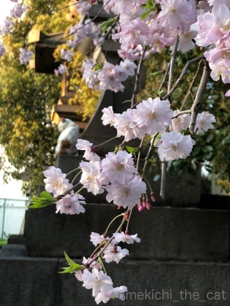
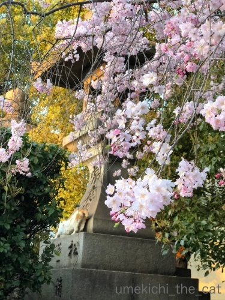
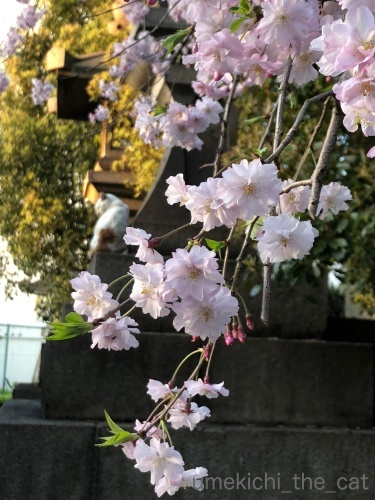
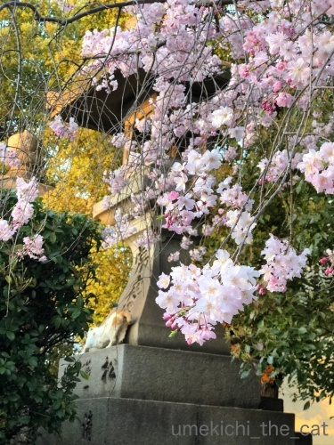

なぜなら、そこに水があるから [梅吉]
飽きるのこのない「とってこい遊び」。

初めは元気に遊んでいますが時間とともに勢いも衰えて来て・・・
（６秒です）
ゴール！ゴーール！！ゴーーーーーーール！！！
お水に入れちゃいます(^▽^;)
ちょっと一休みのつもりか
![[猫]](https://blog.ss-blog.jp/_images_e/101.gif) もう わし やめたい
もう わし やめたい
（おとーさんが楽しそうなので 悪いと思っているw)
と思っているのか・・・・・
不思議行動の多い猫様ですがなぜ水に入れちゃうんだろう。
（ちょっと長くて26秒です）
かと思うとこんなことしてみたり。
（7秒です）
フェイントかけられちゃったり (;^ω^)
ホント、どんなこと考えて遊んでいるのか聞いてみたいですwww
 ↑ガブッと一押し↑
↑ガブッと一押し↑
今が満開の桜たち。

ん？

のび〜っ
何処にいるか分かりますか？＾＾
ソネブロ、昼はずっとメンテナンスでしたね。
この記事もちゃんと投稿できるかちょっと不安。
皆様へのご訪問も全然できていません！後ほど伺いますねー＾＾

初めは元気に遊んでいますが時間とともに勢いも衰えて来て・・・
（６秒です）
ゴール！ゴーール！！ゴーーーーーーール！！！
お水に入れちゃいます(^▽^;)
ちょっと一休みのつもりか
（おとーさんが楽しそうなので 悪いと思っているw)
と思っているのか・・・・・
不思議行動の多い猫様ですがなぜ水に入れちゃうんだろう。
（ちょっと長くて26秒です）
かと思うとこんなことしてみたり。
（7秒です）
フェイントかけられちゃったり (;^ω^)
ホント、どんなこと考えて遊んでいるのか聞いてみたいですwww
今が満開の桜たち。

ん？

何処にいるか分かりますか？＾＾
ソネブロ、昼はずっとメンテナンスでしたね。
この記事もちゃんと投稿できるかちょっと不安。
皆様へのご訪問も全然できていません！後ほど伺いますねー＾＾

カフェオレ色の梅吉

梅吉 2023年8月10日 永眠


梅吉と出会った譲渡会

犬猫の理由なき殺処分ゼロ
妄想広告
UMEKICHI 光

爆発的に早い！
時々攻撃的！
Thanks to Mr.Boss365
爆発的に早い！
時々攻撃的！
Thanks to Mr.Boss365

曽根風呂の緊急メンテは困ったものですね！
1日使えませんでした(^^)
by ma2ma2 (2018-03-30 18:41)
どこにいるか、もちろんわかります！
こてつと暮らすようになって外猫さんセンサーがめちゃめちゃ鋭くなりました(*^▽^*)
梅吉さん、おもちゃをお水でお洗濯でしょうか？！^^;
ウチのもおもちゃを捕まえるとテテテ～ッと走って持って行っていたぶる場所が2か所ほどあります^^
by ゆきち (2018-03-30 18:53)
「いれんのか～い!!」 と突っ込みを入れたくなりました。
by 猫爺 (2018-03-30 20:15)
最後の動画、まさかのフェイントでした(⌒-⌒; )
ゴールが水の中とはいえ「取ってこい」が出来るなんて羨ましいなぁ( ^ω^ )
我が家は下僕が「取ってこい」してますw
by ニッキー (2018-03-30 20:26)
長い動画、楽しみました。
入れるの？、入れないの？そこに置く？水をつけてるの？
いろいろ突っ込みながら見ました。
最後は入れないの〜おい。
by kiki (2018-03-30 21:11)
お手手チョイチョイが可愛いですね！
最後のフェイントも楽しいです。^^)
by yes_hama (2018-03-30 22:51)
お水を飲もうと、器のふちに置いたのが
気になっちゃった？？
そして手でチョイチョイするうちに
お水飲むのを忘れた？？
面白い梅吉さん！
でもこの不思議さがニャンコ、ワンコの
魅力でもありますよね(#^.^#)
by きぃ (2018-03-30 22:58)
うちでもよくおもちゃを水につけてありますが、梅吉さんの様子を見ているとわざと入れるのですね~。くわえたまま水飲みに来て落としちゃうのかと思ってました。
by zombiekong (2018-03-31 01:38)
緊急メンテのおかげで
記事更新できませんでした＾＾；
予想外の動きをすると
見てて飽きませんねぇ＾＾
by ぽちの輔 (2018-03-31 06:51)
緊急メンテ。。。
いったい何がどーしたもんなのか？？？
ほとんど一日、ダウンしてましたよねー(^_^;)
動画、最高！！
まったく予想外の行動はさすがです(^_^;)
by よーちゃん (2018-03-31 10:08)
へへっ(^m^) 最後のフェイント、最高〜♪
ウチの女子2にゃんも、若い頃は、延々と取ってこいやらされたんですけど･･･
すっかりオバちゃんになって、見向きもしないわ(>_<)
のび〜猫さんは、せっかくの花盛りを眺めもせず･･･花より団子派ね。。
by のらん (2018-03-31 11:05)
なぜ水に？謎ですね。
もう わし やめたい ←ここ大笑い
気遣いしてるなんて梅吉くんエライです(*^。^*)
by palpal (2018-03-31 21:19)
なんでお水に入れるんだろう？
家もおもちゃがお水に浸っていることがあるの。
梅吉くんに教えてほしいわ(^-^)
動く梅吉くんはいっつも可愛いね。
最後のフェイント！かっくんって曲がったところでずるってなっちゃった。
コントだよねｗ
by emi (2018-03-31 22:23)
梅吉さんは天才です。
こんな事をうちの猫さんは決してしません。
捕った獲物を見せびらかしているんですね(^^)
by riverwalk (2018-03-31 22:50)
アハハ(^O^)
梅吉さん、可愛いわ～♡
お水に入れる理由が、きっとあるんですよね。
聞いてみると「なるほど～！」って膝打ちしてしまうような＾＾
とっても、ハイレベルな芸だと思います(*^^*)
by マーヤ (2018-03-31 23:43)
なぜ、水に？
家ではやる猫がいなかったので、ニュアンスがわかりませ～ん。
フェイントが可愛い！ なにか考えがあるんでしょうねえ＾m＾
おもちゃを私の近くまで持ってくることはありました。投げろっていう。私が動かないと手の上に乗っけたりまでして。
飽きてくるとちょっと触っただけになったり、目で追うだけになったりで、こっちが取りに行くのを待ってたり。「もっと面白い投げ方してよ」ていう圧を感じたり＾＾；
by sana (2018-04-01 00:04)
ココロはおもちゃをご飯皿に入れることはあるけれど
水飲みにはさすがにないです^^;
梅吉くん、頭脳犯かもしれませんぜ？（絶対続けられない）
桜とねこさん！似合いすぎ！（ ゜∀ ゜）
別件ですが、今スリコで兜の被り物があります。（やわらかい兜^^;）
ウィンドウ越しにちらりと見るだけなのですが
見えるたびに「ああこれ、梅吉くんに似合いそうだなぁ・・・」と
思いながら通過しています(｡-_-｡)
by Ja-Kou66 (2018-04-01 00:14)
は~ぁ、梅吉さんかわいいわ~。
2個目の動画、ちょいちょい手が…
なんか、色々考えている風も。
by ふにゃいの (2018-04-01 15:14)
おとーさんが楽しそうなので
遊びに付き合ってあげている（？）梅吉君、いいですねーｗｗ
お水の中にボチャン！
あれ、何が楽しくて、何が良いのか？(笑)
うちもお風呂場ではボールを必ず転がして湯船に入れるし、
お友達の猫ちゃんもヘアゴムくわえて、水飲み器にボチャン。
まだまだ猫には謎の行動が多いわ！ｗｗ
by リュカ (2018-04-02 09:57)
猫爺さんに続き、「もっていくんか～い！」！！ｗｗｗ
関西で生活していると、ニャンもボケがうまくなるのでしょうか＼(^o^)／
我が家はボールを投げても、目でただ追うだけ……。
梅吉さん。手を変え品を変えてリアクションするなんて、
なんて、おとーさん、おかーさん思いなのでしょう♡
満開の桜の奥に、白茶のニャンが一匹。
絵になりますなぁ～♪
by morichan (2018-04-02 14:59)
梅吉さん、動画だとチャーミングな
動きが見られて可愛さ倍増です♡
楽しませてもらっております(^0^)
by うりくま (2018-04-02 23:15)
ma2ma2さん＞
毎度毎度予告なしに突然やってくるメンテ・・・
復旧予定時刻くらい教えていただけないかと思っていますwww
ゆきちさん＞
そうそう！決して猫を探して歩いているわけではないのですが
遠くても、片隅にいても猫の姿が視界に飛び込んで来ますよね！！
あの形状の生き物に反応するようにセンサーでも搭載されたかしら(*>艸<)
こてつくんのいたぶりポイント・・・
暗がりや隅っこではありませんか？梅吉も同じことします・・・
猫爺さん＞
「いれるんかい？」「いれないんかい？？」
「いれんのか〜い！！」で見事にオチを決めてくれた梅吉です(*>艸<)
ニッキーさん＞
水の中に入れる回数の方が圧倒的に多いのに
動画を撮ろうとするとフェイントが多くて・・・
ウケを狙っているんじゃないかと本気で疑いましたwww
最近は「なんで わしだけ かつやくしとるん？」と思うようになったのか
飼い主にも参加を要求するようになりました。
一緒に走るの疲れるんですけど・・・
kikiさん＞
お水にジャボン動画を撮るつもりでいたのに
それじゃダメじゃないー！な動画の方が
結果的に面白くなりましたwww
梅吉もなかなかやります＾＾
yes_hamaさん＞
お手手チョイチョイ、どさくさに紛れて
お水にも手を入れてるんですよねー。
どうにもお水に興味があるようです＾＾
きぃさん＞
そうなんです！
自分でも何をしたいのか何をするつもりだったのか
忘れちゃったような・・・(^▽^;)
不思議行動、見ていて本当に飽きないです！！
zombiekongさん＞
梅吉は完全にわざと入れていますねー＾＾
お水に手を入れるのも好きなのですが
普通にいたずらすると私に怒られるので
「おもちゃ おちてしもた・・・」と
言い訳にしているところもあるような(^▽^;)
ぽちの輔さん＞
予想外の動きばかりなので目が離せません！！
オチを作るとことはさすが大阪の子、です＾＾
よーちゃん＞
ソネブロは予告なし、復旧予定の告知もなしのメンテが得意技ですよね (⌒_⌒;
ブロガーの皆さんも「またー？」と諦め気味なのがwww
梅吉のオチ、なかなかでしょーＯ(≧▽≦)Ｏ
のらんさん＞
梅吉もそのうち遊んでくれなくなるのかな・・・
お付き合いが正直面倒な時もありますが
今のうちに一緒に遊べることを楽しんでおかなっくっちゃ！
花より団子な白茶猫さん、今日は砂浴びをしているところに遭遇しました＾＾
palpalさん＞
水に浮かんでいるのが面白いのかな、と
バスタブに浮かべて見せてもあんまり興味を示さなくて・・・
自分の飲み水に浮かべるのが醍醐味なようです。
ホント、謎ー！！
emiさん＞
犯にゃんはくるみちゃん？タラくん？どっちだろうねー。
広いバスタブにぷかぷか浮かべてもあんまり喜ばなかったから
狭いところでひたす、のが楽しいんだろうか・・・
最後の動画は写している方もズルってなりましたー＾＾
音消しちゃっているけどおっとと私の爆笑音声が入ってたんですよwww
by ちぃ (2018-04-03 20:42)
riverwalkさん＞
あ、そうかー！見てー見てーなのかもしれませんね＾＾
初代猫はお外に遊びに行くと毛虫を捕まえて来て
見て見てーだったので毎回絶叫していました。
梅吉はレジ袋でよかった・・・・・
マーヤさん＞
ぜひぜひ、その理由を聞いてみたいです〜。
もし梅吉が教えてくれたら・・・二人だけの秘密にします♡
sanaさん＞
おもちゃがお水に浮かんでいる・・・という猫の行動は耳にしていたのですが。。。
普段からやるのだったらクセで説明がつきそうなんですが
梅吉の場合は「取ってこい遊び」の時限定なので
何かしらの意図を感じちゃいますw
「もっと面白い投げ方してよ」あります！あります！！
「おかーさんも つまらんひとに なったなぁ」と
冷たい目をされることも(꒦ິ⌑꒦ີ)
Ja-Kou66さん＞
続行不可、を考えるとやっぱり「やめたい」説が
ぴったり当てはまるんですよねー。
「おもちゃがぬれたから あそべない」と思っているんだったら
すごいわー！！梅吉賢いー！！（親バカです）
スリコ、見て来ました、が残念な事にありませんでした。
近々別店舗に行ってみる予定ですw
もー気になっちゃってしょうがないwww
なにか男の子のお祝いをしたいな、と思っていたのです。
情報ありがとうございましたm(_ _)m
ふにゃいのさん＞
そうそう＾＾
こう見えてなにか、いろいろ考えているんですよねー＾＾
きっと話を聞くことができでも
私たちには理解しがたい何かをwww
リュカさん＞
梅吉、やりたい放題な様でいて結構ニンゲンに気を使うところも(^_－)☆
お水におもちゃを入れちゃう子たちは
先祖がそういう習性を持つ猫だったとか？？
もしかしたらアライグマから枝分かれして進化したとか？？？
ホント、謎の行動です！！
morichanさん＞
梅吉は大阪生まれ大阪育ちなので
ボケはDNAに組み込まれていると思われます(^_－)☆
サービス精神も旺盛なので日夜おとーさんに絡んでいますよwww
白茶にゃんさんはこの辺りをナワバリしているので
よくお見かけします＾＾
今日は砂の中を元気よく転げ回っていらっしゃいました(*>艸<)
うりくまさん＞
最近動画に頼りすぎかなーなんて思っていたので
そうおっしゃっていただけると嬉しいです＾＾
梅吉は姿形よりも行動や仕草が可愛かったりするので（ふふっ）
動画だとより楽しんでいただけるかな・・・と。
ただ、動画だと家のボロもまるっと映ってしまうので
気をつけなければと思っておりますwww
by ちぃ (2018-04-03 21:50)